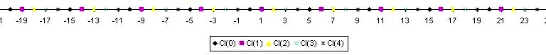

n désignant un entier relatif positif non nul. On dit que deux entiers relatifs x et y sont 'congrus modulo n' (notation x ≡ y [n]) si la différence x-y est un multiple de n.
On voit tout de suite que cette définition est équivalente à:
x et y ont même reste dans la division par n.
On voit aussi que:
(x ≡ y [n]) ⇔ (x-y ≡ 0 [n])
Par exemple 8 et 15 sont congrus modulo 7. Mais 5 et 6 ne sont pas congrus modulo 4.
Definitions
definition
n denoting a non-zero positive relative integer, we say that two integers x and y are 'congruent modulo n' (notation x ≡ y [n]) if the difference x-y is a multiple of n.
We see immediately that this definition is equivalent to:
x and y have same remainder in the division by n.
We also see that:
(x ≡ y [n]) ⇔ (x-y ≡ 0 [n])
For example 8 and 15 are congruent modulo 7. But 5 and 6 are not congruent modulo 4.
Propriétés
théorème
∀ n ≠ 0 la congruence modulo n est une sur ℤ. Pour cette relation il y a exactement n qui sont:
Cl(0): les multiples de n
Cl(1): les nombres dont le reste dans la division par n est 1
Cl(2): les nombres dont le reste dans la division par n est 2
Cl(n-1): les nombres dont le reste dans la division par n est n-1.
Toutes ces classes possèdent un nombre infini d'éléments.

théorème
Toute relation de congruence modulo n est avec l'addition.
démonstration
Cela veut dire que si x ≡ y [n] et x' ≡ y' [n] alors (x+x') ≡ (y+y') [n]. En effet (x+x')-(y+y')=(x-y)+(x'-y') et ( (x-y) ∈ nℤ) ∧( (x'-y') ∈ nℤ) ⇒ ((x-y)+(x'-y') ∈ nℤ) car nℤ est un de ℤ
théorème
Toute relation de congruence modulo n est compatible avec la multiplication.
démonstration
Cela veut dire que si x ≡ y [n] et x' ≡ y' [n] alors (xx') ≡ (yy') [n]. En effet (xx')-(yy')=(x-y)y'+x(x'-y') et ( (x-y) ∈ nℤ) ∧( (x'-y') ∈ nℤ) ⇒ ((x-y)y'+x(x'-y') ∈ nℤ) car nℤ est un de ℤ
Conséquences
Supposons x ≡ a [9] et y ≡ b [9] alors xy ≡ ab [9]. C'est là l'origine de la fameuse 'preuve par neuf' des classes primaires de nos pères et grands-pères. Cette 'preuve' n'est d'ailleurs nullement une preuve. Elle est une preuve a contrario, c'est à dire que si le test échoue alors le résultat de la multiplication est faux à coup sûr, mais si le test passe, cela veut dire seulement que le résultat exact et le résultat trouvé diffèrent seulement d'un multiple de 9. Il y a donc environ 9/10 chances pour que l'opération soit exacte. Mais on peut croiser les tests. Examinons par exemple le test de divisibilité par 11. Ce test est basé sur la remarque que 10 n est congru à 1 modulo 11 pour n pair et à -1 modulo 11 pour n impair. Le test de divisibilité par 11 est donc facile à mettre en oeuvre. On fait la somme alternée des chiffres du nombres en mettant des signes sur les chiffres de rang pair et des - sur les chiffres de rang impair. Par exemple pour 17845 on calcule (5+8+1)-(4+7)= 14-11=3 on sait donc que le reste de 17845 dans la division par 11 est 3. Maintenant si une multiplication passe le test de la preuve par 9 et conjointement celui de la preuve par 11, la différence entre le produit réel et le produit trouvé est un multiple de 9 et un multiple de 11, donc un multiple de leur ppcm qui est 99 car ils sont premiers entre eux. On voit que dans ce cas (tests croisés) la probabilité de la justesse de l'opération augmente considérablement.
Properties
theorem
∀ n ≠ 0 the congruence modulo n is an on ℤ. For this relation there are exactly n which are:
Cl(0): multiples of n
Cl(1): numbers whose remainder in division by n is 1
Cl(2): numbers whose remainder in division by n is 2
Cl(n-1): numbers whose remainder in division by n is n-1.
All these classes have an infinite number of elements.
theorem
Any congruence relation modulo n is with the addition.
proof
This means that if x ≡ y [n] and x' ≡ y' [n] then (x+x') ≡ (y+y') [n]. Indeed (x+x')-(y+y')=(x-y)+(x'-y') and ( (xy) ∈ nℤ) ∧( (x'-y') ∈ nℤ) ⇒ ((x-y)+(x'-y') ∈ nℤ) because nℤ is a the
theorem
Any congruence relation modulo n is compatible with multiplication.
proof
This means that if x ≡ y [n] and x' ≡ y' [n] then (xx') ≡ (yy') [n].
Indeed (xx')-(yy')=(x-y)y'+x(x'-y') and ( (x-y) ∈ nℤ) ∧( (x'-y') ∈ nℤ) ⇒ ((x-y)y'+x(x'-y') ∈ nℤ) because nℤ is an .
Consequences
Suppose x ≡ a[9] and y ≡ b[9] then xy ≡ ab [9]. This is the origin of the famous 'proof by nine'
of the primary classes of our fathers and grandfathers (mostly in France, unknown in USA). This 'proof' is by no means a proof. It is a proof a contrario, i.e. if the test fails then the result of the multiplication is false for sure, but if the test passes, it means only say that the exact result and the found result differ only by a multiple of 9. So there is about a 9/10 chance for the operation to be exact. But we can cross the tests. Consider, for example, the test for divisibility by 11. This test is based on the observation that 10 n is congruent to 1 modulo 11 for n even and to -1 modulo 11 for n odd. The test of divisibility by 11 is therefore easy to implement. artwork. We build the alternating sum of the digits of the numbers by putting signs + on even rank digits and - on odd rank digits. For example for 17845 we calculate (5+8+1)-(4+7)= 14-11=3 so we know that the remainder of 17845 in the division by 11 is 3. Now if a multiplication passes the test of proof by 9 and jointly that of the proof by 11, the difference between the real product and the product found is a multiple of 9 and a multiple of 11, so a multiple of their lcm which is 99 because they are relatively prime. We sees that in this case (cross-testing) the probability of the correctness of the operation increases considerably.